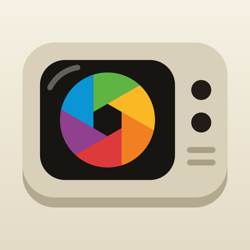
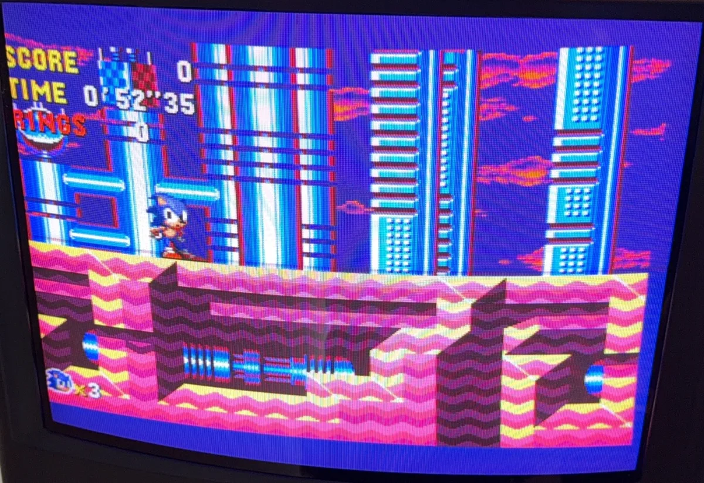
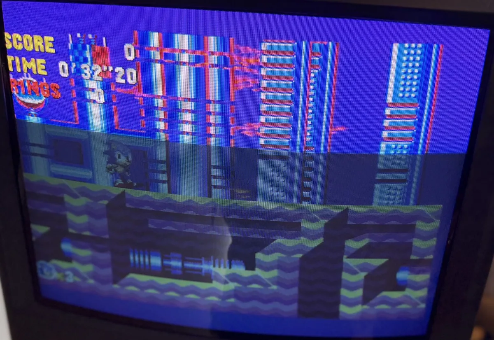
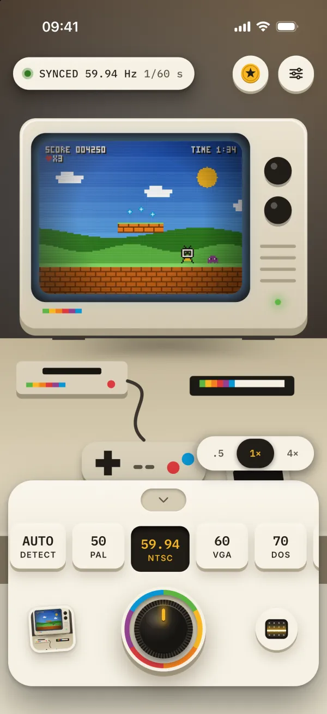
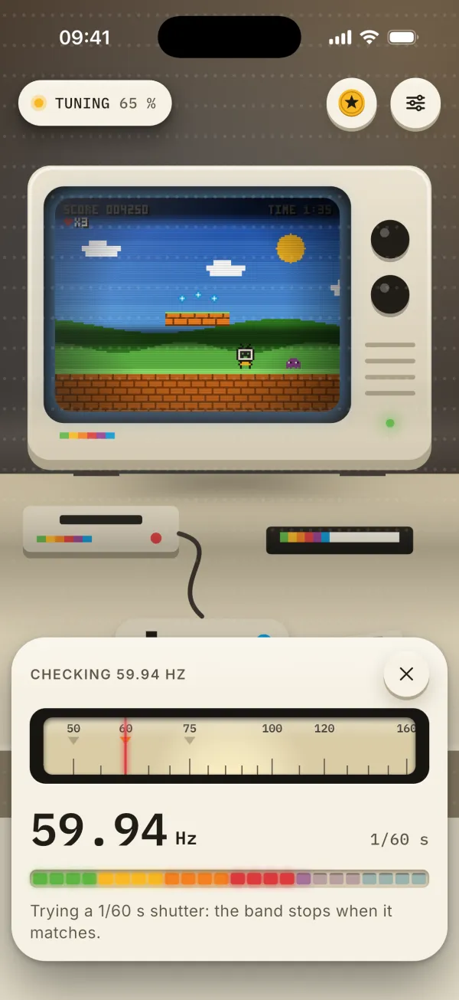
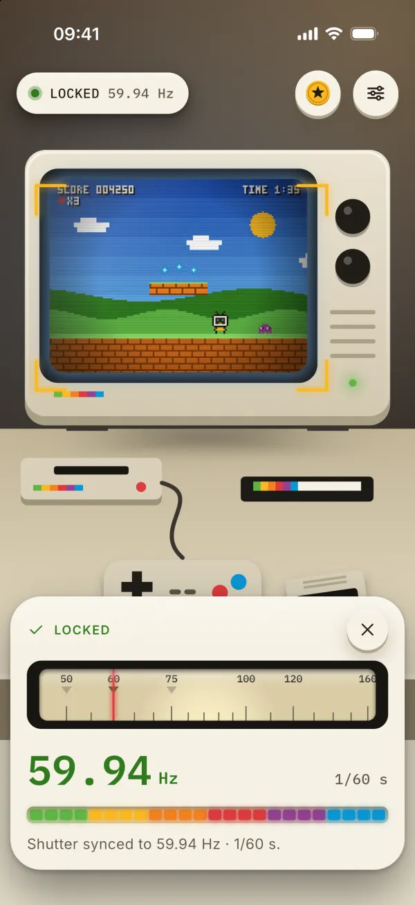
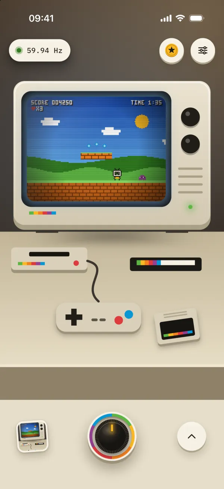
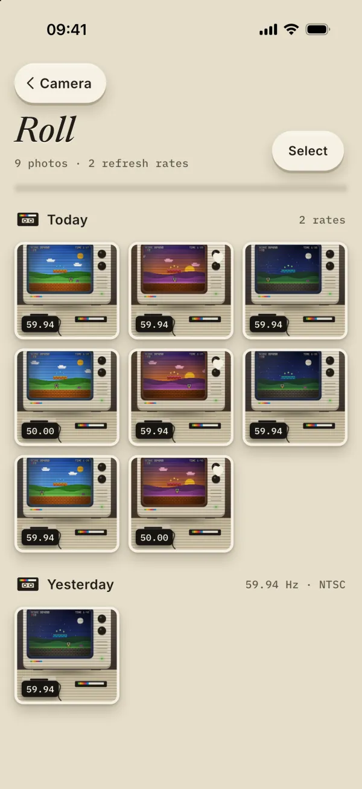
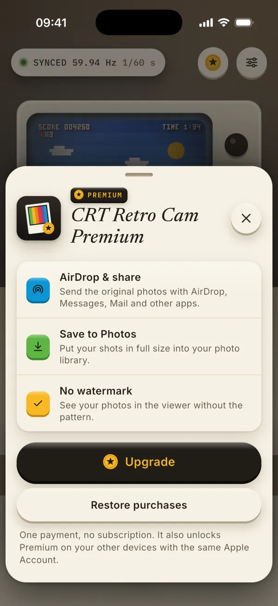

Every back camera
Switch between the back lenses your phone has, for example 0.5×, 1× and 2×.

Flicker-free CRT TV photos.
Point, sync, shoot: CRT Retro Cam times the shutter to your screen's refresh rate, so retro games and old monitors look as clean in photos as they do in person.


PHONE CAMERA SYNCEDA CRT draws its picture line by line, 50 to 120 times a second, and each line glows only briefly. A phone photo with a short shutter catches the screen half-drawn, so dark bands cross it.
CRT Retro Cam keeps the shutter open for exactly one refresh, or a whole number of them, so the screen is drawn completely during the exposure.
Detect finds rates from 45 to 165 Hz. Most European TVs run at 50 Hz, most American and Japanese ones at 59.94 Hz, and computer monitors at 60 to 85 Hz or more.

Turn the screen on and fill most of the frame with it. The viewfinder shows exactly what the photo will contain; tap it to focus.

Tap Detect and hold still. The app samples the flicker and locks onto the rate where the banding disappears. Or pick a preset: 50 Hz PAL, 59.94 Hz NTSC, VGA and VESA rates.

Fine-tuning tries shutter times around the detected rate and keeps the one that leaves the least banding, with a "vertical hold" animation while it locks on.

Turn the knob, or press a volume button or the Camera Control. Fold the controls away with the grabber for a clear view of the whole frame.
Switch between the back lenses your phone has, for example 0.5×, 1× and 2×.
Shoot with the on-screen knob, the volume buttons, or the Camera Control on iPhones that have one.
A retro look inspired by beige computers, CRT TVs and VHS tapes, with a short guide on first start.


Mark favourites, and see the rate and shutter each photo was taken with.
CRT Retro Cam is not in the stores yet. You can try it now and tell us what your screens make of it.
Requires an iPhone with iOS 15 or later.
Requires Android 10 or later and a camera that allows a manual shutter time. Some Android phones don't let apps set the shutter time; CRT Retro Cam cannot sync on them.
Found a bug? Open an issue at github.com/ChristianDeckert/AppStore/issues with your phone model and system version.
The CRT test screen lets a computer monitor stand in for a CRT. A real flicker for the camera needs a fast monitor, 120 Hz or more; on a 60 Hz monitor the page shows rolling bars that demonstrate the effect.
Open the CRT test screenYour photos stay on your device until you export them, and the app's only network connection is for in-app purchases through Apple's App Store. Read the privacy policy.